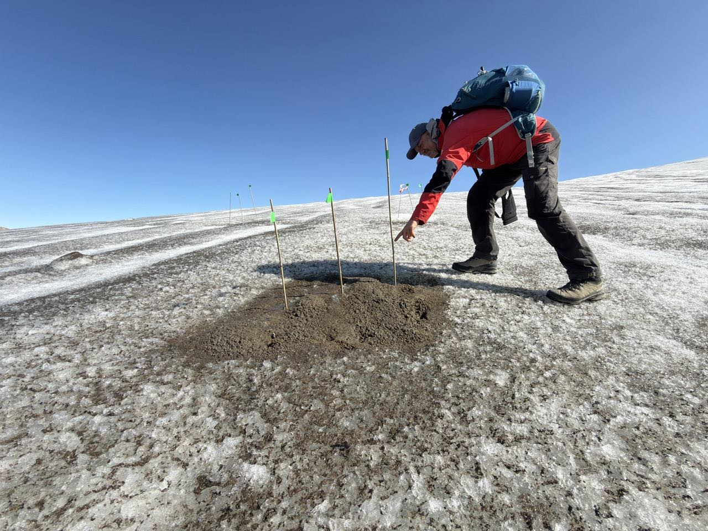
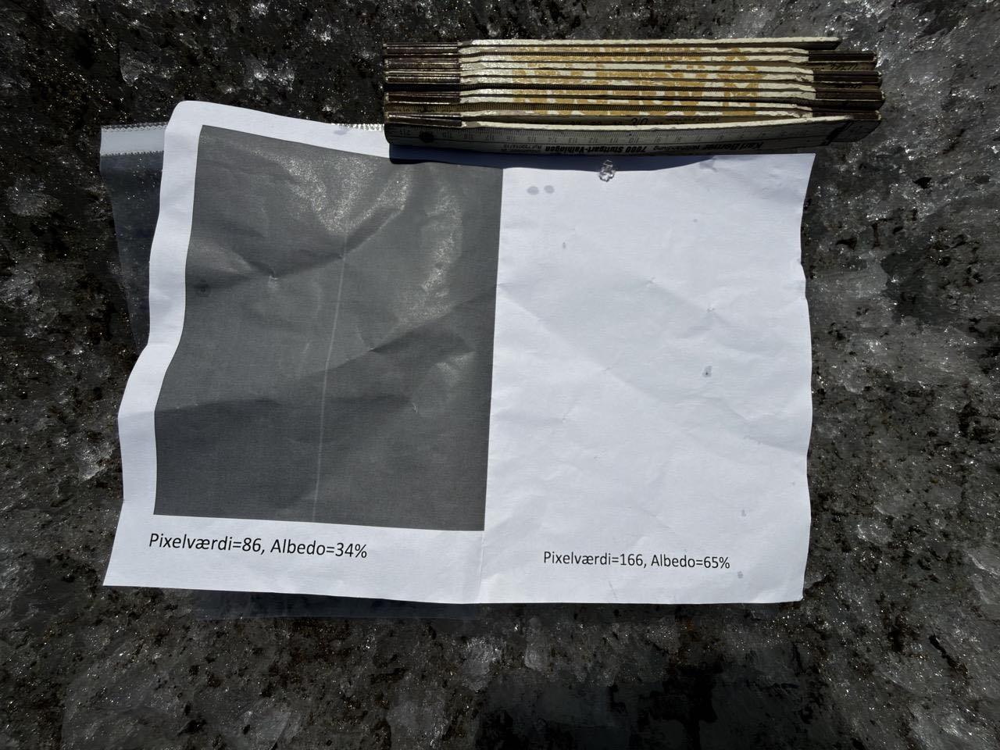
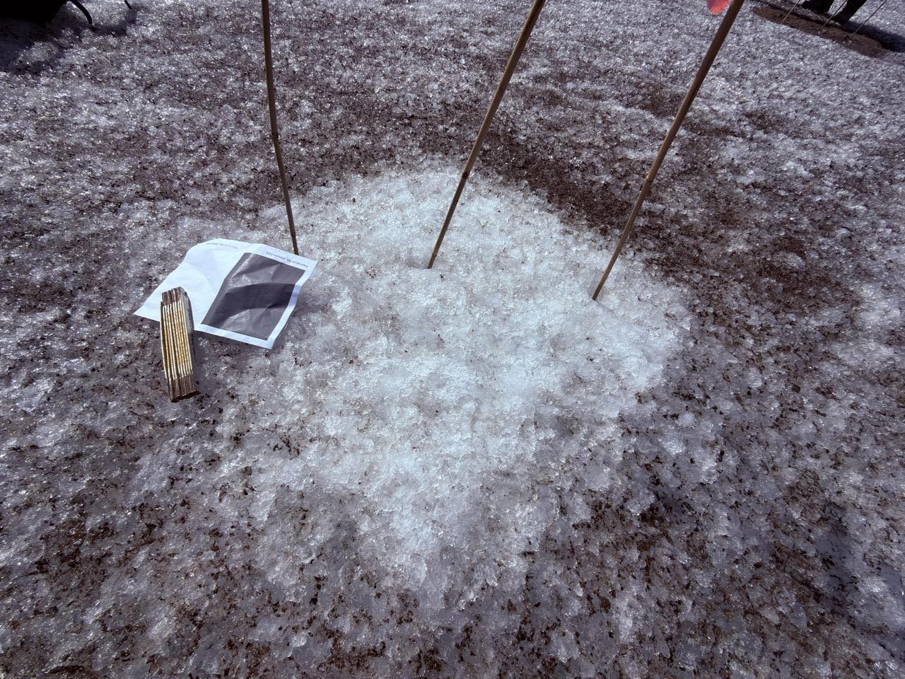
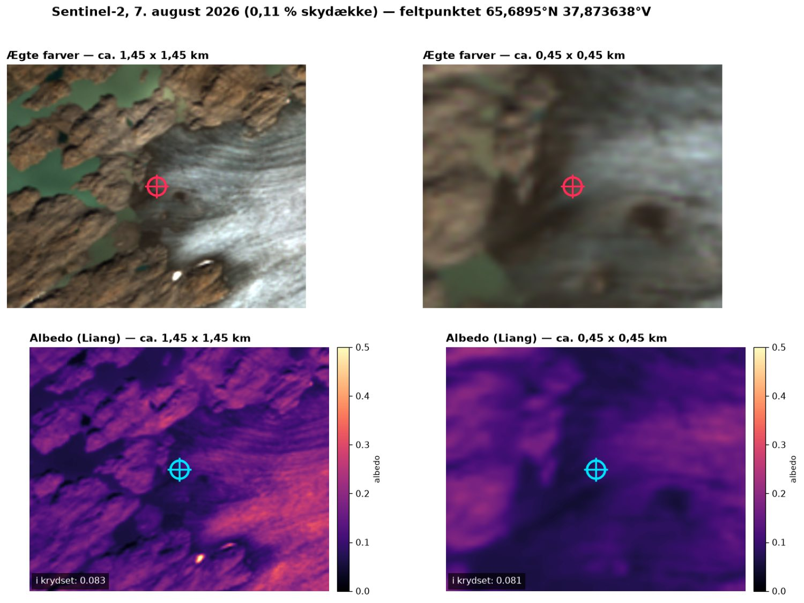
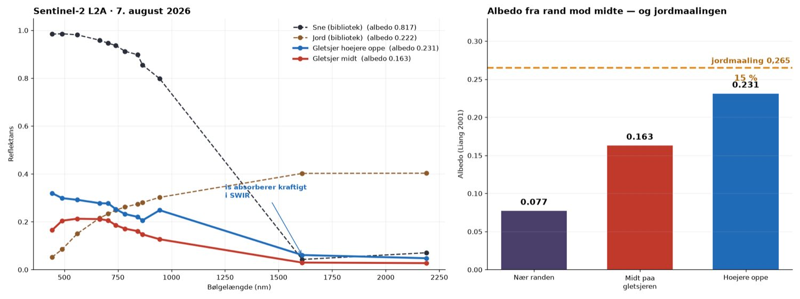
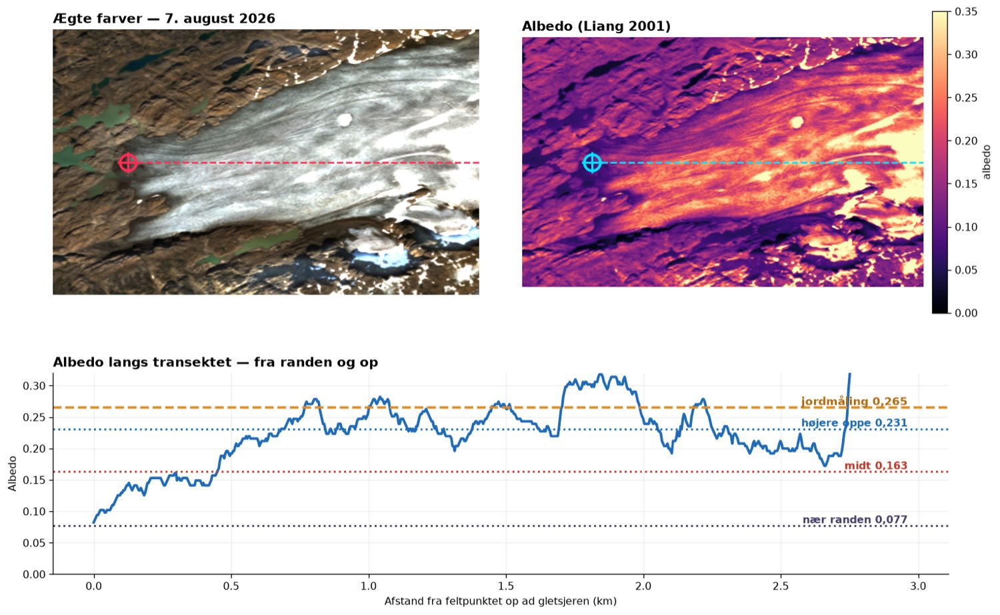

00Datasættet
Fem spektre, samme instrument, samme dag: direkte sollys, blå himmel, to grønne planter og en klippe.
Kurverne herunder er ikke Solens spektrum alene. De er Solen ganget med atmosfæren ganget med spektrometerets egen følsomhed — CCD'en er mest følsom omkring 550–600 nm og nærmest døv ved 950 nm. Det lyder som et problem, men det er nøglen til resten af siden: så snart man dividerer to spektre med hinanden, forkorter instrumentet væk. Derfor bygger afsnit 02 til 05 på forhold, ikke på absolutte niveauer.
Sådan skal tallene læses
Spektrene deler ikke radiometrisk skala — hvert af dem er optaget med sin egen integrationstid, og softwaren skalerer dem hver for sig. Absolut reflektans kan derfor ikke aflæses, og alle reflektanskurver herunder er normeret.
Til gengæld er alt det der bygger på forhold upåvirket, fordi en konstant faktor forkorter væk: NDVI, båndforhold, linjedybder og Rayleigh-eksponenten står som de er. Kontrolregning med mørkefratræk flytter NDVI med 0,003 og Rayleigh-eksponenten fra −4,22 til −4,20.
01Solen — to atmosfærer på én kurve
Kurven bærer aftryk fra både Solens overflade og Jordens luft. De to slags streger kan skelnes.
Fraunhofer-linjerne: grundstoffer 150 millioner km væk
Dybderne herunder er målt mod et lokalt kontinuum lagt gennem de nærmeste kontinuumspunkter på hver side af linjen. Det er nødvendigt: et globalt fit overdriver dybden på kurvens stejle flanker.
| λ (nm) | Dybde | EW | Identifikation | Ophav |
|---|---|---|---|---|
| 393 | 47 % | 1,61 nm | Ca II K | Solen |
| 396 | 39 % | ↑ samlet | Ca II H | Solen |
| 383 | 33 % | — | Fe I 382,0 + Mg I 383,2/383,8 | Solen |
| 430 | 27 % | 0,78 nm | G-båndet (CH) + Fe I 430,8 | Solen |
| 486 | 14 % | 0,45 nm | H-beta | Solen |
| 517 | 13 % | 0,55 nm | Mg I b-triplet 516,7/517,3/518,4 | Solen |
| 438 | 13 % | — | Fe I | Solen |
| 410 | 12 % | — | H-delta | Solen |
| 589 | 8 % | 0,17 nm | Na I D₁+D₂ 589,0/589,6 | Solen |
| 656 | 14 % | 0,44 nm | H-alfa | Solen |
| 761 | 62 % | 4,50 nm | O₂ A-båndet | Jorden |
| 936 | 35 % | 4,67 nm | H₂O 940-båndet | Jorden |
| 687 | 23 % | 1,36 nm | O₂ B-båndet | Jorden |
| 720 | 19 % | 2,05 nm | H₂O | Jorden |
| 823 | 8 % | 1,03 nm | H₂O | Jorden |
Hα, Hβ, Na D og Mg b er hver kun 2–3 datapunkter brede. De er altså instrument-begrænsede: spektrometerets spaltebredde (~1,5–2 nm) er bredere end linjerne selv. De sande linjer er langt smallere og langt dybere, så de aflæste dybder er udvandede — ikke fysiske. Ca II H og K er brede nok til at være delvist opløst, og derfor står de så voldsomt igennem.
To ting kunne ikke findes: Ca I ved 422,7 nm (kun 1 % — under støjen) og Hγ ved 434 nm (6 %, halvt begravet i den tætte skov af Fe I-linjer). Det er reelle grænser for instrumentet, ikke fejl i målingen.
Hvor meget luft gik lyset igennem?
O₂ A-båndet ved 761 nm fjerner 62 % af lyset i et bånd på få nanometer. Ilt er jævnt fordelt i atmosfæren, så båndets styrke er et direkte mål for luftmassen. Og Sermilik ligger på 65,7° N — solen kommer aldrig ret højt:
| Dato | Solhøjde ved middag | Luftmasse m |
|---|---|---|
| 21. juni (max) | 47,8° | 1,35 |
| 15. juli | 45,8° | 1,39 |
| 4. august | 41,5° | 1,51 |
| 1. september | 32,5° | 1,86 |
Selv på årets allerbedste dag når solen kun 47,8°. Luftmassen er altid mindst 1,35, og er målingen ikke taget lige omkring middag, hurtigt 2–3. Samme dag står solen 51° over Danmark, altså luftmasse 1,28. Lyset ved Sermilik skal gennem omkring 18 % mere atmosfære end hjemme — og det er hele forklaringen på hvorfor den blå ende af kurven er så kraftigt dæmpet.
Hvorfor man ikke kan aflæse Solens temperatur af denne kurve
Et Planck-fit til kontinuumet giver 5490 K hvis man kun bruger 450–650 nm — fristende tæt på Solens 5772 K. Men udvider man intervallet, eksploderer fittet: 500–700 nm giver 12000 K, 450–900 nm giver 9930 K. Den ustabilitet er ikke fysik, den er beviset for at kurven ikke er kalibreret.
De 5490 K er et lykketræf, hvor detektorens fald mod blå og atmosfærens dæmpning i blå tilfældigvis trækker i hver sin retning. Til gengæld er det en fremragende samtale at have med en klasse: hvad er rådata egentlig, og hvornår er et pænt tal et rigtigt tal?
02Himlen — λ⁻⁴ målt, ikke påstået
Det her afsnit er det mest indirekte i hele analysen, så det tages langsomt: hvad de to målinger er, hvorfor man dividerer dem, og hvad tallet der kommer ud, betyder.
Først: hvad er de to målinger overhovedet?
De blev lavet med samme spektrometer, få minutter fra hinanden. Forskellen er udelukkende hvilken vej fiberen pegede:
Hvorfor man dividerer
Problemet er, at ingen af de to målinger er "ren fysik". Begge er forurenet af ting vi ikke er interesserede i. Skriver man op hvad der faktisk sidder i hvert spektrum, ser det sådan her ud:
Læg mærke til at de to linjer er næsten identiske. Himmel-målingen har præcis ét led mere: P(λ) — chancen for at en lysstråle af netop den bølgelængde bliver kastet ned i vores retning i stedet for at fortsætte lige ud. Det er det led vi vil have fat i. Så vi dividerer:
Alt det overstregede forkorter væk, fordi det står ens i tæller og nævner. Det er hele pointen. Vi slipper af med tre ting på én gang:
- Solens eget spektrum forsvinder. Vi behøver ikke vide hvordan Solen stråler — vi måler kun hvad atmosfæren gør ved lyset.
- Spektrometerets følsomhed forsvinder. Det er den store gevinst. Præcis den ukalibrerede detektorrespons, der ødelagde temperaturfittet i afsnit 01, er nu væk uden at vi har kalibreret noget som helst.
- Atmosfærens dæmpning forkorter i store træk også væk, fordi begge stråler har rejst gennem samme luft.
Tilbage står ét enkelt tal for hver bølgelængde: hvor let bliver netop denne farve spredt? Det er en ren egenskab ved luften. Ingen kalibrering, intet referenceinstrument, ingen tabelopslag — bare to målinger delt med hinanden.
Hvorfor grafen er logaritmisk på begge akser
Vi forventer at spredningen følger en potenslov: P(λ) = k · λn, hvor n er det tal vi jagter. Tager man logaritmen på begge sider:
Det er derfor begge akser er logaritmiske i figuren herunder. En potenslov, som ellers er en krum kurve man ikke kan se hældningen af, bliver til en ret linje hvis hældning direkte er eksponenten. Man behøver ikke fitte noget for at se det — man kan lægge en lineal på grafen og aflæse fysikken.
Hvad −4 betyder, og hvorfor det er lige præcis 4
Et luftmolekyle er omkring tusind gange mindre end en lysbølges bølgelængde. Når lysbølgens elektriske felt passerer, rykker det molekylets elektroner frem og tilbage i takt med bølgen. Molekylet bliver til en lillebitte antenne, der svinger med lysets egen frekvens — og en svingende ladning udsender selv lys, i alle retninger. Det er spredning: lyset absorberes ikke, det bliver sendt videre et andet sted hen.
Og her kommer eksponenten fra: en svingende antennes udstrålede effekt vokser med frekvensen i fjerde potens. Høj frekvens betyder kort bølgelængde, så omskrevet til bølgelængde bliver det λ⁻⁴. Det er ikke et tal man har målt sig frem til og rundet af — det falder ud af elektromagnetismen.
Konsekvensen er stor. Sammenligner man violet ved 400 nm med rødt ved 700 nm:
Derfor er himlen blå: det blå lys bliver kastet rundt i atmosfæren og når os fra alle retninger, mens det røde i højere grad fortsætter uforstyrret. Og derfor er Solen selv gullig — det blå er netop det der er blevet fjernet fra den direkte stråle. De to iagttagelser er den samme fysik set fra hver sin side. Ved solnedgang, hvor lyset skal igennem mange gange mere luft, er selv det grønne spredt væk, og der er kun det røde tilbage.
Hvad grafen faktisk viser — og hvor den afviger
Målingen følger λ⁻⁴ meget tæt i den blå ende: eksponenten er −4,22 over 400–500 nm med en afvigelse på blot 0,023. Men mod rød flader kurven ud til −2,68. Den afvigelse er ikke en måleusikkerhed — den er et selvstændigt resultat.
Luften indeholder nemlig ikke kun molekyler. Der er også aerosoler: støvkorn, havsaltkrystaller, små vanddråber. De er ikke meget mindre end bølgelængden — de er sammenlignelige med den. Så gælder antenne-argumentet ikke længere, og spredningen bliver næsten uafhængig af farven, altså λ⁰.
- I det blå er molekylernes λ⁻⁴ så kraftig at den fuldstændig dominerer → vi måler −4,22.
- I det røde er molekyle-spredningen faldet med en faktor 9, mens aerosolerne bidrager lige meget som før. Deres flade bidrag kommer til at fylde relativt mere → kurven flader ud til −2,68.
Forskellen mellem de to eksponenter er altså partikel-signalet — og det kan regnes om til et tal for luftkvaliteten. Det gøres nedenfor.
Men er den blå himmel nu også sollys?
Hele argumentet ovenfor hviler på en antagelse: at himmellyset er sollys der har taget en omvej. Den antagelse skal efterprøves, ikke forudsættes. Og det kan gøres skarpt, fordi de to muligheder giver modsatte forudsigelser:
- Hvis himlen selv lyste — glødede, fluorescerede, hvad som helst — ville dens spektrum være dens eget. Solens absorptionslinjer havde ingen grund til at være der.
- Hvis himlen er spredt sollys, skal Solens Fraunhofer-linjer stå med, og i samme relative dybde. Et molekyle der spreder lys, ved jo ikke om der tilfældigvis mangler lys ved 589 nm — det kaster bare videre hvad det får. Hullerne følger med uændrede.
Det er en rigtig test: de to hypoteser kan ikke begge overleve. Her er tallene:
| Linje | Dybde i Solen | Dybde i himlen | Forskel |
|---|---|---|---|
| Ca II K (393 nm) | 50,1 % | 48,4 % | 1,7 pp |
| Hβ (486 nm) | 19,3 % | 17,7 % | 1,6 pp |
| Mg b (517 nm) | 12,7 % | 12,6 % | 0,1 pp |
| Na D (589 nm) | 8,8 % | 10,7 % | 1,9 pp |
| Hα (656 nm) | 14,4 % | 13,2 % | 1,2 pp |
Linjerne står der, og de står lige så dybt. Mg b afviger med 0,1 procentpoint — det er inden for aflæsningsusikkerheden. Den blå himmel er sollys. Ikke som postulat i en lærebog, men som noget der er efterprøvet på egne data, med en test der kunne være faldet ud til den anden side.
Figuren herunder viser det direkte. De to spektre er hver især normeret til deres eget niveau ved 560 nm, så de kan lægges oven på hinanden. Deres hældning er vidt forskellig — himlen er langt stærkere i blå, hvilket netop er λ⁻⁴ — men de små hak sidder på nøjagtig samme bølgelængder og er lige dybe.
Hvor ren er luften over Sermilik?
Eksponenten er ikke bare et tal om lysets fysik — den er et mål for luftkvaliteten. Ren luft består af molekyler og giver λ⁻⁴. Jo flere partikler der er i luften, jo fladere bliver kurven. Deler man himlen op i sine to bidrag, kan de skilles ad:
Målt gennem klar luft er 84 % af himmellyset molekylespredning ved 550 nm. Det er højt. Over en storby ville partikelandelen være mange gange større. En måling gennem tyndt skyslør samme dag gav til sammenligning kun 44 % — dråberne tredoblede partikelbidraget:
Det er præcis samme princip som satellitter bruger til at måle aerosoler og luftforurening. Her er det gjort med to spektre og en division.
03Planterne — klorofyl og red edge
Reflektans er målespektret delt med solspektret. Igen forsvinder instrumentet, og planten står tilbage.
Kurverne herunder er normeret så NIR-plateauet (790–880 nm) er 1,0. Det er nødvendigt fordi den absolutte skala er tabt, og det er uden konsekvenser for alt det interessante: formen, kanternes placering og båndforholdene er uberørte. De telluriske bånd er interpoleret væk, fordi de sidder i både tæller og nævner og kun bidrager med støj i divisionen.
Klorofylsignaturen
Den sunde plante viser lærebogsformen fuldstændigt rent:
- Flad, meget lav bund fra 400 til 500 nm (R ≈ 0,05 normeret). Klorofyl a og b absorberer begge kraftigt i blå — Soret-båndet — og karotenoiderne dækker resten op til omkring 500 nm. Absorptionen er så mættet at der ikke er en enkelt tydelig minimumsbølgelængde, bare en bred bund. Det er den korrekte aflæsning, ikke en manglende måling.
- Grøn pukkel med top ved 553 nm (R = 0,10). Dobbelt så høj som bunden. Det er den eneste grund til at planter ser grønne ud: ikke fordi de udsender grønt, men fordi de er dårligst til at absorbere netop dér.
- Skarpt minimum ved 671 nm (R = 0,07) — klorofyl a's røde absorptionsbånd. Målt mod et lokalt kontinuum er dykket 53 % dybt.
- Red edge: stejleste hældning ved 717 nm, halvhøjdepunkt ved 729 nm. Reflektansen stiger 14,5 gange fra 670 til NIR-plateauet.
Red edge er ikke pigment overhovedet — det er struktur. Ved 700 nm holder klorofylet op med at absorbere, og lyset møder i stedet bladets indre: cellevægge, luftrum, vand. De spreder næsten alt NIR tilbage. Springet fra 7 % til 100 % over bare 60 nm er den skarpeste kant i hele naturens reflektansverden — og præcis derfor bygger NDVI og al satellitbaseret vegetationsovervågning på den.
Grøn plante 2 er ikke en anden plante — den er en blanding
Plante 2 har ikke bare svagere signal, den har en anden form: ingen tydelig grøn pukkel (maksimum forskudt til 620 nm), rødminimum flyttet til 642 nm, og grøn/rød-forholdet under 1. Det ligner ikke en syg plante. Det ligner en plante blandet med noget andet. Det efterprøves i afsnit 5.
04Klippen og jorden — jern, og noget levende
En jævnt stigende kurve uden skarpe kanter. Næsten.
Klippens reflektans stiger nærmest monotont fra blå mod nær-infrarød: R(450)/R(650) = 0,415, altså mere end dobbelt så meget lys tilbage i rødt som i blåt. Hældningen er jævn gennem hele det synlige område (+1,85 pr. 1000 nm fra 450 til 650 nm) uden nogen skarp kant.
Det er den klassiske signatur for trevalent jern, Fe³⁺. Ladningsoverførsels- overgange i oxideret jern absorberer kraftigt i UV og blå og aftager gennem grøn mod rød. Det er den samme fysik der gør rust rød, Mars rød og forvitrede klippeoverflader rødbrune. Grundfjeldet omkring Ammassalik er arkæisk gnejs, og en forvitret, jernoxid-farvet overflade passer præcist på formen.
Men NDVI er ikke nul
Bar klippe burde ligge omkring 0,05–0,10. Målingen giver +0,23. Det er for højt til at være tilfældigt, så jeg gik efter en forklaring, og der er tre spor der peger samme vej:
| Indikator | Klippen | Sund plante | Tolkning |
|---|---|---|---|
| NDVI | +0,23 | +0,87 | for højt til bar sten |
| Klorofyldyk ved 670–675 nm | 6 % | 53 % | svagt, men reelt |
| Red edge-kontrast | 1,6× | 14,5× | en antydning af kant |
Et klorofyldyk på 6 % er i sig selv i underkanten af hvad man tør konkludere på fra ét bånd. Men det står præcis hvor det skal (670–675 nm), og det følges af både forhøjet NDVI og en svag red edge. Tre uafhængige indikatorer der alle peger samme vej, er en anden sag end én.
Den mest sandsynlige tolkning: klippen er ikke bar. Den bærer et tyndt, usammenhængende dække af lav eller mos — hvilket er nærmest uundgåeligt på grønlandsk grundfjeld. Skorpelav er så tætsiddende at overfladen ser sten-grå ud for øjet, men spektrometeret ser klorofylet.
Hvad det betyder for satellitbilleder
Det her er i lille skala præcis den fejlkilde der plager NDVI-kortlægning af arktiske områder. En Sentinel-2-pixel er 10 × 10 m. Er en tiendedel af den dækket af lav, flytter NDVI sig målbart — og en tidsserie kan komme til at vise "grønnere Arktis" hvor der i virkeligheden bare er lav på sten. Dét er en pointe man kan tage direkte fra denne ene måling ud på en klippe ved Sermilik og hen i en diskussion af fjernmålingens troværdighed.
Bar jord til sammenligning
En måling af bar, rødlig jord samme sted afgør spørgsmålet. Jorden er utvivlsomt uden vegetation — og den giver NDVI = −0,03. Altså nul, som bar overflade skal. Klippens +0,23 kan derfor ikke forklares med "sten giver også lidt udslag".
Jorden har samtidig en endnu kraftigere jernsignatur end klippen: R(450)/R(650) = 0,26 mod klippens 0,42 — den reflekterer næsten fire gange så meget rødt som blåt. Reflektansen topper ved 750 nm og falder derefter, hvilket sandsynligvis er Fe³⁺-krystalfeltbåndet omkring 850–900 nm. Det er samme bånd der bruges til at kortlægge jernholdige mineraler fra satellit.
05Blandingen — mixed pixel, målt i felten
Hypotesen fra afsnit 3 kan efterprøves med almindelig lineær algebra.
Hvis Grøn plante 2 er en blanding af vegetation og bar klippe i spektrometerets synsfelt, må dens spektrum kunne skrives som en vægtet sum af de to andre. Det er en lineær mindste-kvadraters løsning med to ubekendte, regnet på 420–880 nm med de telluriske bånd holdt udenfor:
Resultat
plante2 ≈ 0,366 × plante + 0,321 × klippe (R² = 0,987)
Vegetationsandel ≈ 53 %. Modellen forklarer 98,7 % af variationen i et spektrum med 460 frihedsgrader ud fra to tal.
Kontrolregningen er lige så vigtig: forsøger man den anden vej — at bygge den sunde plante af plante 2 og klippe — kræver det en negativ klippevægt (−0,795). Negative andele er fysisk meningsløse, og det fortæller at den sunde plante er den reneste endmember i datasættet. Blandingen går kun én vej.
Det svarer nøjagtigt til den NDVI der blev målt: +0,87 for ren vegetation, +0,23 for klippe, og +0,63 for en cirka fifty-fifty blanding — pænt imellem, en anelse trukket mod vegetationen fordi den er lysere i NIR og derfor fylder mere i signalet. Det er mixed pixel-problemet, demonstreret med et spektrometer til under 3000 kr.
06Sneen — albedo og urenheder
Målt på gletsjeren 7. august kl. 18:28–18:58 lokal tid: indstråling, ren sne, beskidt sne og jordholdig sne. Alle fire med samme instrument, samme indstillinger, inden for en halv time.
Albedo — hvor stor en del af sollyset en overflade kaster tilbage — er den enkeltvariabel der styrer mest af indlandsisens afsmeltning. Og den er ikke en konstant: den afhænger af hvad der ligger på sneen. De tre overflader herunder lå inden for få meter af hinanden.
Urenhedernes fingeraftryk
Deler man beskidt sne med ren sne, forsvinder både indstrålingen og instrumentet ud af regnestykket — de to blev målt med samme geometri få minutter fra hinanden. Det der står tilbage, er urenhedernes rene virkning:
Fysikken bag formen er skarpt opdelt:
- I det synlige absorberer sod, støv og jord kraftigt. Det er her sneen bliver mørkere, og det er her næsten hele albedo-tabet sker.
- I det nær-infrarøde absorberer isen selv, og det er kornstørrelsen der bestemmer niveauet. Urenheder betyder næsten ingenting her.
Derfor stiger forholdet mod NIR. Og derfor er det bemærkelsesværdigt at de to beskidte prøver nærmer sig hinanden i NIR (0,27 og 0,24) mens de er vidt forskellige i det synlige (0,18 og 0,12): de har omtrent samme kornstruktur, men den ene bærer cirka dobbelt så meget lysabsorberende materiale som den anden. Det er en aflæsning man ikke kan lave med det blotte øje.
| Overflade | Synligt 400–700 | NIR 760–880 | Energivægtet |
|---|---|---|---|
| Ren sne | 1,00 | 1,00 | 1,00 |
| Beskidt sne | 0,184 | 0,266 | 0,189 |
| Jord/beskidt sne | 0,124 | 0,241 | 0,132 |
Hvad det koster i energi
De beskidte flader beholder altså kun 19 % og 13 % af den rene snes albedo. Sætter man ren sne til en albedo på 0,80 — en rimelig værdi for ren, men ikke helt frisk sne — bliver regnestykket:
Ved 500 W/m² — et typisk klarvejrs-middel over en sommerdag — svarer det til 324 og 347 W/m² ekstra absorberet energi. Går det hele til smeltning, er det omkring 42–45 mm vandækvivalent ekstra afsmeltning på en enkelt soldag sammenlignet med den rene sne få meter derfra.
Det er albedo-feedbacken, målt direkte
Mørkere sne absorberer mere energi og smelter hurtigere. Når sneen smelter, bliver urenhederne tilbage og koncentreres på overfladen. Så bliver den endnu mørkere, og det hele accelererer. Målingerne her fanger to trin på den skala inden for få meters afstand — og forskellen mellem dem er større end forskellen mellem sne og bar jord i det synlige.
Det er samme mekanisme der driver mørkezonen på Grønlands indlandsis, hvor støv, sod og snealger sænker albedoen over store områder. Her er den målt med et instrument til under 3000 kr.
Sådan skal tallene læses
Alle fire spektre er optaget med samme integrationstid, så de deler radiometrisk skala, og forholdene mellem dem er reelle. Tallene i tabellen — relativ albedo mod ren sne — er derfor solide: ren og beskidt sne blev målt med samme geometri fire minutter fra hinanden.
Det absolutte niveau er ikke målt. Forholdet ren sne / indstråling overstiger 1 omkring 700 nm, hvilket ikke kan passe for en albedo. Forklaringen er målegeometrien: indstrålings-målingen opsamler hele himlens blå lys, mens sneen er belyst mest af den direkte, røde lavtstående sol. Til absolut albedo kræves et hvidt referencepanel eller en cosinus-korrigeret sensor. Albedoen 0,80 for ren sne ovenfor er derfor en antagelse, ikke en måling — de relative tal står uden den.
07Feltforsøget — albedo målt med pinde
3.–9. august blev der afsat felter på gletsjeren med forskellig albedo, og smeltningen aflæst på ablationspinde. På seks døgn smeltede isen mellem 20 og 40 cm — alt efter hvor mørk overfladen var.

Sådan måles albedoen
Albedoen bestemmes med et trykt referencekort der lægges på isen og fotograferes sammen med overfladen. Kortet har to felter med kendt albedo:

albedo = pixelværdi / 255.Billedet lægges ind i albedo-appen, hvor man markerer referencekortet og de områder der skal måles. Appen sammenligner gråværdierne og regner om:
Fordi både kortet og isen er i samme billede, under samme lys og med samme kameraindstilling, forkorter belysningen og eksponeringen væk. Det er nøjagtig samme princip som divisionen i afsnit 02 til 06 — bare med et kamera i stedet for et spektrometer.
De målte albedoer
| Overflade | Albedo | Hvad det er |
|---|---|---|
| Hvidt felt | 57,5 % | Lys, kornet is — det lyseste på gletsjeren |
| Beskidt is | 26,0 % | Almindelig overflade med støv og sediment |
| Gletsjerens nederste del | 26,5 % | Gennemsnit over hele ablationszonen |
| Mørk is | 10,7 % | Våd is med meget sediment — det mørkeste |

Regnestykket — og et krydstjek der holder
Smelter isen kun på grund af den absorberede solstråling, kan smeltedybden forudsiges direkte:
Vender man ligningen om, kan hvert felt selv fortælle hvor meget sol der har ramt det. Og de to yderpunkter er uafhængige af hinanden:
To felter med vidt forskellig albedo og vidt forskellig smeltning peger på samme indstråling inden for 5 %. Det er ikke en tilfældighed — det er beviset for at smeltningen her er styret af den absorberede solstråling og stort set intet andet.
Og tallet lader sig efterprøve helt uafhængigt: solen leverer 381 W/m² i døgnmiddel over atmosfæren på denne breddegrad i august. De 266 W/m² svarer til en atmosfærisk transmission på 0,70 — præcis hvad man forventer for en uge med klart vejr i Arktis.
Hvad det siger om hele gletsjeren
Ablationszonens gennemsnitlige albedo blev målt til 26,5 %. Med samme regnestykke smelter den 34 cm is på seks døgn — knap 6 cm i døgnet. Havde overfladen haft det hvide felts albedo, ville det have været 19,5 cm.
Forskellen på 14 cm over seks dage er albedoens pris. Ganget op over en hel smeltesæson og hele ablationszonen er det den mekanisme der afgør, hvor meget af Grønlands overfladesmeltning der løber i havet hvert år.
En uoverensstemmelse i metoden
Det trykte referencekort angiver det hvide felt til albedo 65 % (pixelværdi 166, altså 166/255). Appen regner derimod med 70 % for referencekortet. Alle målte albedoer bliver dermed cirka 7,7 % for høje — en overflade der burde give 30 %, kommer ud som 32,3 %.
Tallene på denne side er som de kom ud af appen. Rettes referencen til 65 %, falder de målte albedoer tilsvarende, og den udledte indstråling stiger en smule. Konklusionerne om forholdet mellem felterne ændrer sig ikke.
Til gengæld er de 7 % en del af forklaringen på afvigelsen mod satellitten i afsnit 08 — og de peger på en generel forbedring: brug begge referencefelter til en to-punkts-kalibrering i stedet for kun det hvide. To kendte albedoer og to målte gråværdier fastlægger sammenhængen empirisk, uanset hvad kameraets eksponering og tonekurve har gjort undervejs.
08Fra spektrum til satellit
Otte af de ti bånd, Sentinel-2 bruger til at se på Jordens overflade, ligger inden for instrumentets rækkevidde. Nedenfor holdes feltmålingerne op mod Sermilik Validation-GIS — og de stemmer inden for 15 %, når man måler på det rigtige sted.
En satellit måler ikke spektre. Den måler nogle få brede bånd, og af dem beregnes de indeks som klimaovervågning bygger på. Sentinel-2 har 13 bånd — ti rettet mod overfladen og tre mod atmosfæren; et spektrometer som dette har 571 punkter. Folder man de målte spektre med satellittens faktiske båndbredder, får man præcis de tal Sentinel-2 ville rapportere for netop den overflade — og så kan de sammenlignes med, hvad satellitten faktisk sagde.

Hvad satellitten ville rapportere
| Overflade | B02 blå | B03 grøn | B04 rød | B08 NIR | NDVI | NDWI |
|---|---|---|---|---|---|---|
| Grøn plante | 0,053 | 0,097 | 0,075 | 1,030 | +0,865 | −0,828 |
| Grøn plante 2 (blandet) | 0,113 | 0,179 | 0,237 | 1,025 | +0,624 | −0,703 |
| Klippe | 0,286 | 0,451 | 0,653 | 1,029 | +0,224 | −0,390 |
| Bar jord | 0,365 | 0,636 | 1,045 | 1,002 | −0,021 | −0,223 |
NDVI beregnet gennem satellittens brede bånd giver +0,865 for den sunde plante mod +0,866 fra hele spektret. Båndene mister altså næsten ingenting for vegetation — kanten er så kraftig at den slår igennem uanset opløsning. Det er forklaringen på, at NDVI overhovedet virker fra 786 km's højde.
Hvilke af GIS'ens lag kan valideres — og hvilke kan ikke
| Lag i Validation-GIS | Bånd | Kan måles her? | Hvad det bruges til |
|---|---|---|---|
| NDWI — smeltesøer | B03, B08 | Ja, begge | Smeltesøer på indlandsisen, afstrømning |
| NDVI — vegetation | B04, B08 | Ja, begge | Arktisk grønning, vegetationsskift |
| Albedo (Liang 2001) | B02, B04, B08, B11, B12 | 3 af 5 · 85 % af vægten | Energibalance, afsmeltning |
| NDSI — sne og is | B03, B11 | Nej — B11 mangler | Snedække, snegrænse |
| Landsat LST | B10 termisk | Nej — termisk | Overfladetemperatur |
Grænsen er skarp og værd at kende: Red Tide stopper ved 950 nm, og Sentinel-2's to SWIR-bånd ligger ved 1610 og 2190 nm. Det er ikke en mangel ved metoden, men en konkret systemgrænse som eleverne selv kan konstatere ved at kigge på bølgelængdeaksen.
Hvor meget den grænse koster, kan gøres op præcist. Albedo-formlen vægter de fem bånd som 0,356·B02 + 0,130·B04 + 0,373·B08 + 0,085·B11 + 0,072·B12. De tre bånd instrumentet kan nå, bærer 0,859 af de samlede 1,016 — altså 85 % af vægten — så snemålingerne i afsnit 06 dækker langt det meste af det der afgør albedoen, og kun de sidste 15 % ligger uden for rækkevidde.
NDSI derimod falder helt væk, og det er lærerigt hvorfor. Indekset er (B03 − B11)/(B03 + B11), altså grøn minus SWIR. Sne er meget lys i grøn — men det er skyer også. Det er først i SWIR at de to skilles ad: sne absorberer kraftigt ved 1610 nm, skyer gør ikke. Hele pointen med NDSI ligger dermed i det ene bånd instrumentet ikke har. Man kan måle at sneen er lys, men ikke skelne den fra en sky — og det er præcis den skelnen satellitten er bygget til.
Hvorfor det betyder noget for klimaovervågning
Albedo er den enkeltvariabel der styrer mest af indlandsisens afsmeltning: mørkere overflade → mere absorberet energi → mere smeltning → endnu mørkere overflade. Den beregnes fra rummet ud fra fem bånd og en empirisk formel — og den formel er i sin tid kalibreret mod feltspektre af nøjagtig samme slags som disse.
Grønning af Arktis aflæses af NDVI-tidsserier over årtier. Men målingerne her viser at en klippe med lav giver +0,23 og en halvt bevokset flade +0,63. En Sentinel-2-pixel er 10 × 10 m og indeholder næsten altid flere overflader. En stigning i NDVI kan derfor betyde mere vegetation — eller bare en anden blanding. Uden jordmålinger kan de to ikke skilles ad.
Jord mod satellit: den første rigtige sammenligning
Feltmålingerne blev holdt op mod Sentinel-2 fra 7. august 2026 — en scene med kun 0,11 % skydække, taget kl. 14:14 UTC, altså næsten præcis ved lokal middag hvor solen stod højest (41,5°). Bedre betingelser findes ikke.

| Sted | Albedo | Overflade |
|---|---|---|
| Nær isranden | 0,077 | Mørk, sedimentfyldt is med smeltevandskanaler |
| Midt på gletsjeren | 0,163 | Bar, snavset is |
| Højere oppe — hvor der blev målt | 0,231 | Renere bar is |
| Målt på jorden med referencekort | 0,265 | Samme flade |
Satellit 0,231 mod jordmåling 0,265 — 15 % fra hinanden. For to metoder der ikke har noget med hinanden at gøre — den ene et kamera og et stykke papir på isen, den anden et spektrometer i 786 km højde — er det en god overensstemmelse.
Og der er god plads til de sidste 15 %: appens reference står på 70 % hvor kortet siger 65 % (godt 7 %), og en hældning på blot 3–5° væk fra solen giver 6–11 %, fordi Sentinel-2's atmosfærekorrektion regner med en vandret flade. Der er ikke noget uforklaret tilbage.
Men først gik det galt — og dét er den vigtigste lektion
Den første sammenligning blev lavet nær isranden og gav satellit 0,077 mod jordmåling 0,265. Faktor tre. Forklaringen var hverken et defekt instrument eller en dårlig metode:

Randzonen er et af de mest heterogene steder man kan vælge: mørke sedimentbånd, smeltevandskanaler og bar is inden for få meter. Albedoen beregnes af bånd med pixels på både 10 × 10 og 20 × 20 m, så hvert tal gennemsnitter det hele over op til 20 × 20 m, mens et referencekort på jorden måler den flade det tilfældigvis ligger på.
Lektionen: hvor man måler, afgør hvad man måler
Det er samme fænomen som blandingen i afsnit 05 — bare på is i stedet for vegetation, og med en faktor tre i stedet for en faktor to. Validering handler mindre om præcision i instrumentet end om at vælge en flade der er stor og ensartet nok til at satellitten ser det samme som mennesket.
Praktisk betyder det: mål midt på en ensartet flade, mindst 40 × 40 m, og hold dig væk fra render, kanter og overgange. Det er ikke en detalje — det er forskellen mellem faktor tre og 15 %.
Et værktøj der blev efterset
Da sammenligningen blev lavet, gav pixel-info-værktøjet i Validation-GIS'en albedo 0,616, NDSI 0,106 og NDVI 0,003 for punktet — mens de samme tal hentet direkte fra Copernicus var 0,132, +0,851 og −0,260. Fejlen lå ikke hos satellitten. Værktøjet lagde alle scener i søgevinduet sammen, skyer inklusive, og skrev vinduets første dato på resultatet. Derfor stod der 23. juli og 70 % skydække, selv om der fandtes en næsten skyfri scene fra selve dagen.
Nu henter værktøjet én scene-dag ad gangen, maskerer skyer og skyskygger ud og vælger den skyfri dag, der ligger nærmest den ønskede. Efterprøvet 20. september 2026: et punkt på gletsjeren giver for 7. august albedo 0,266, NDSI +0,947 og NDVI −0,135 — fortegn og størrelse som bar is skal have. Tallene i tabellen herover er hentet direkte fra kilden.
Hvad der vil stramme sammenligningen yderligere
To ting mangler for at lukke de sidste 15 %. Et hvidt referencepanel, så jordreflektansen bliver absolut frem for kalibreret mod et trykt kort — det fjerner de 7 % fra referencen. Og hældningen læst af ArcticDEM, så den topografiske korrektion kan regnes med i stedet for skønnes.
Begge ville flytte tallene få procent. Ingen af dem ændrer konklusionen: kamera og satellit måler det samme, når de får lov at se på den samme flade.
09Hvad det kan bruges til
Ét instrument, én formiddag, fem overflader — og tal der rækker fra atomernes energiniveauer til satellitfjernmåling.
Det stærke ved datasættet er koblingen: eleverne peger et instrument på noget de kan se — solen, himlen, en plante, en sten — og får resultater ud der ikke kunne fås på nogen anden måde end ved at måle. Rejsen fra elevens verden til naturvidenskabens Verden går gennem én fil.
Fem spørgsmål, hver med et måleresultat som svar
| Spørgsmål | Hvad data svarer | Fører videre til |
|---|---|---|
| Hvad er en streg i et spektrum? | Ca II K står 47 % dybt — calcium i en stjerne 150 mio. km væk | Atomernes energiniveauer, kvantespring, stjerners sammensætning |
| Hvorfor er himlen blå? | λ−4,22, målt — ikke påstået | Elektromagnetisme, dipolstråling, hvorfor solnedgange er røde |
| Hvor ren er luften? | 84 % molekylespredning i klar luft, 44 % gennem slør | Aerosoler, luftforurening, satellitovervågning af atmosfæren |
| Hvorfor er planter grønne? | Reflektans 0,05 i blå og rød, 0,10 i grøn, 1,0 i NIR | Fotosyntese, klorofyl, bladets indre struktur |
| Hvad afgør hvor hurtigt indlandsisen smelter? | Beskidt sne beholder 19 % af den rene snes albedo | Albedo-feedback og energibalance — den halvdel der sker på overfladen |
| Kan man stole på et satellitbillede? | Plante 2 er 53 % vegetation + 47 % klippe, R² = 0,99 | Mixed pixels, NDVI-tidsserier, "greening of the Arctic" |
Fire forløb der kan bygges direkte på tallene
Det tværfaglige: satellitten i lommeformat
Sentinel-2 måler i 13 bånd. Dette spektrometer måler i 571. Alle de indeks satellitten leverer — NDVI, vegetationsdække, jernindhold — kan regnes ud af tallene her, og eleverne kan se præcis hvilke bølgelængder de bygger på og hvorfor netop dem. Klippen med NDVI +0,23 mod den bare jords −0,03 er hele diskussionen om troværdighed i arktisk fjernmåling, målt på to sten.
Klimaforløbet: hvor bliver Grønlands is af?
Indlandsisen taber masse på to måder, og de vejer omtrent lige tungt. Cirka halvdelen af det årlige tab kommer fra overfladen — sne og is der smelter, hvor solindstrålingen leverer energien. Den anden halvdel kommer fra dynamikken: isen flyder hurtigere ud mod kysten, kalver som isbjerge og smelter i mødet med havet.
Det er en pointe værd at gøre eksplicit for eleverne, fordi den deler emnet i to helt forskellige fysiske historier — og fordi kun den ene kan måles med et spektrometer.
Halvdel 1: overfladen — det I selv kan måle
- Hvad er albedo, og hvorfor betyder den noget? Ren sne kaster omkring 80 % af sollyset tilbage. De beskidte flader få meter derfra beholder kun 19 % og 13 % af det. Regnet om absorberer de 85–89 % af indstrålingen mod den rene snes 20 %.
- Hvad koster det i smeltning? Ved 500 W/m² svarer det til 324–347 W/m² ekstra absorberet energi, altså 42–45 mm vandækvivalent ekstra afsmeltning på en enkelt soldag. Eleverne regner det selv med smeltevarmen 334 kJ/kg — det er en opgave i energiregnskab, ikke i udenadslære.
- Hvorfor forstærker det sig selv? Når sneen smelter, bliver urenhederne liggende tilbage og koncentreres på overfladen. Albedoen falder yderligere, der absorberes mere, og det går hurtigere. Det er en positiv feedback — og de to beskidte prøver er reelt to trin på den skala.
- Hvorfor er den svær at modellere? Fordi urenhederne ikke er jævnt fordelt, ikke er konstante over tid, og delvis er biologiske — snealger vokser når det bliver varmere og gør isen mørkere. En model med fast albedo rammer systematisk for lavt.
Halvdel 2: dynamikken — og den foregår lige uden for døren
Den anden halvdel kan et spektrometer ikke sige noget om. Til gengæld ligger Sermilik feltstation ved et af verdens bedst undersøgte eksempler på den: Helheim Gletsjer løber ud i Sermilik Fjord få snesevis af kilometer mod nordvest og er en af Grønlands mest aktive udløbsgletsjere.
Mekanismen er en anden end på overfladen. Varmt, salt atlanterhavsvand ligger som et lag i dybden i fjorden og når helt ind til gletsjerfronten, hvor det smelter isen nedefra. Det svækker fronten, gletsjeren accelererer, og der leveres mere is til havet pr. år. Det er den del modellerne især har haft svært ved, fordi den kræver at man kobler iskappe, fjorddybde og oceanets varmetransport sammen.
Didaktisk er det stærkt netop fordi de to halvdele mødes samme sted. Eleverne kan måle albedoen på sneen med eget udstyr, og de kan se isbjergene fra Helheim drive forbi i fjorden. Den ene halvdel af regnskabet kan de selv sætte tal på; den anden må de hente fra Validation-GIS'en og fra forskningens data. At kunne skelne mellem "det jeg selv har målt" og "det jeg må stole på andre har målt" er i sig selv en naturvidenskabelig kompetence.
Koblingen til mørkezonen
På indlandsisens vestrand findes et bælte hvor isen er markant mørkere end omgivelserne — mørkezonen. Årsagen er den samme som her: støv, sod og snealger sænker albedoen. Zonen er vokset over de seneste årtier og er en aktiv del af forskningen i iskappens overflade-massebalance.
Målingerne på siden er den samme fysik i lille skala. Eleverne kan gå fra deres egen måling af to snepletter til at forstå hvorfor et bælte på tværs af Grønland smelter hurtigere end resten — og hvorfor det stadig kun er den halve historie.
Måleprotokol, hvis I selv skal ud
- Mål aldrig direkte mod Solen. Brug et hvidt referencepanel i fuldt
sollys — PTFE, hvid skumplade eller et mat hvidt karton. Så ligger alle mål i
samme lysstyrkeområde, og reflektansen bliver ægte:
R_mål = (mål / reference) × R_reference - Samme integrationstid til hele serien — ellers kan spektrene ikke sammenlignes indbyrdes. Sigt efter 50–70 % af fuldskala på det lyseste mål.
- Tag et mørkespektrum med fiberen dækket til, ved samme integrationstid. Det betyder lidt i midten af spektret, men op mod 20 % i enderne og på mørke mål.
Videre målinger der giver nye resultater
Sne og is — høj og flad reflektans i det synlige, markant fald efter 1000 nm. Vand — næsten sort i NIR, hvilket er hele grundlaget for at kortlægge smeltesøer på indlandsisen. Samme plante hen over sæsonen — red edge flytter sig målbart mod kortere bølgelængder når klorofylet nedbrydes om efteråret, og det er en tidsserie eleverne selv kan producere.